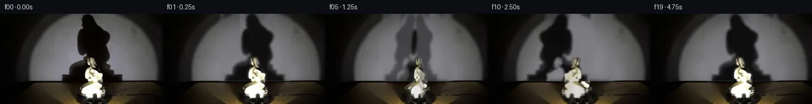

![首帧]()

Round 00
2026-11-05T01:11:08.301714+00:00像素候选变化代码 +304/−0inspection 更新
pixels 15c7c35d1dd76550 · code a3b117ce49b207a9
查看本轮 generate.py 真实 diff
--- previous/generate.py +++ current/generate.py @@ -0,0 +1,304 @@ +#!/usr/bin/env python3 +"""Generate a five-second, locked-camera continuation from first_frame.png. + +The source frame supplies all photographic texture. Motion is synthesized with +local segmentation, inverse image warps, a yaw-dependent rear-side appearance, +and a separately projected soft wall shadow. No external assets are used. +""" + +from pathlib import Path +import math + +import cv2 +import numpy as np +from PIL import Image, ImageDraw, ImageFont + +from artifact_io import save + + +ROOT = Path(__file__).resolve().parent +W, H = 256, 144 +CY_WALL = 61.0 +CX_WALL = 135.0 + + +def smoothstep(edge0, edge1, x): + q = np.clip((x - edge0) / (edge1 - edge0), 0.0, 1.0) + return q * q * (3.0 - 2.0 * q) + + +def radial_wall_plate(src): + """Estimate the wall hidden by the large silhouette from clean radial samples.""" + yy, xx = np.mgrid[0:H, 0:W] + rr = np.sqrt((xx - CX_WALL) ** 2 + (yy - CY_WALL) ** 2) + rough_shadow = (yy < 108) & (xx > 95) & (xx < 197) + clean = (yy < 107) & ~rough_shadow + # Exclude the almost-black far vignette where channel ratios are unstable. + lum = src.mean(axis=2) + clean &= lum > 6 + + bins = np.arange(0, 181) + profile = np.zeros((len(bins), 3), np.float32) + counts = np.zeros(len(bins), np.int32) + ri = np.clip(np.rint(rr).astype(int), 0, len(bins) - 1) + for radius in bins: + m = clean & (np.abs(rr - radius) < 2.2) + if m.any(): + profile[radius] = np.median(src[m], axis=0) + counts[radius] = int(m.sum()) + valid = np.flatnonzero(counts) + for c in range(3): + profile[:, c] = np.interp(bins, valid, profile[valid, c]) + profile[:, c] = cv2.GaussianBlur(profile[:, c, None], (0, 0), 3.5)[:, 0] + model = profile[ri] + + # The clean wall has a mild vertical warmth and right/left imbalance; recover + # it from broad source residuals outside the silhouette and diffuse it inward. + residual = src.astype(np.float32) - model + known = clean.astype(np.uint8) * 255 + broad = np.empty_like(residual) + for c in range(3): + channel = residual[:, :, c].copy() + channel[~clean] = 0 + num = cv2.GaussianBlur(channel * (known / 255.0), (0, 0), 14) + den = cv2.GaussianBlur(known / 255.0, (0, 0), 14) + broad[:, :, c] = num / np.maximum(den, 0.04) + model = np.clip(model + 0.58 * broad, 0, 255) + + plate = src.astype(np.float32).copy() + # Only replace the zone actually hidden by the source shadow, with a broad + # feather under the eventual new penumbra. + roi = ((xx > 91) & (xx < 201) & (yy < 108)).astype(np.float32) + roi = cv2.GaussianBlur(roi, (0, 0), 3.0) + plate = plate * (1.0 - roi[:, :, None]) + model * roi[:, :, None] + return np.clip(plate, 0, 255).astype(np.uint8), model + + +def source_shadow_alpha(src, wall_model): + """Recover opacity of the original wall shadow relative to the clean spotlight.""" + yy, xx = np.mgrid[0:H, 0:W] + src_l = cv2.cvtColor(src, cv2.COLOR_RGB2GRAY).astype(np.float32) + bg_l = cv2.cvtColor(np.clip(wall_model, 0, 255).astype(np.uint8), cv2.COLOR_RGB2GRAY).astype(np.float32) + alpha = (bg_l - src_l - 2.0) / np.maximum(bg_l - 4.0, 28.0) + alpha = np.clip(alpha, 0.0, 0.96) + region = (yy < 108) & (xx > 92) & (xx < 199) + alpha *= region + # Reject tiny photographic fluctuations while retaining the soft penumbra. + alpha *= smoothstep(0.035, 0.20, alpha) … diff truncated; 217 more lines …